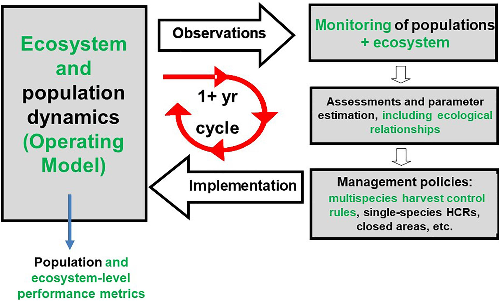
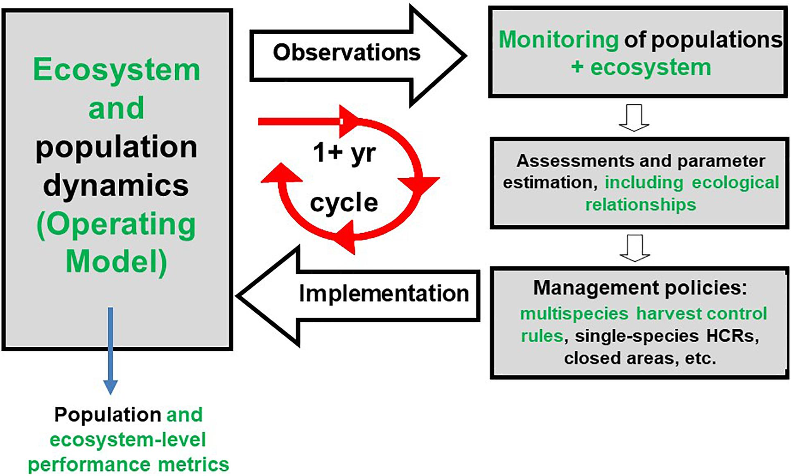
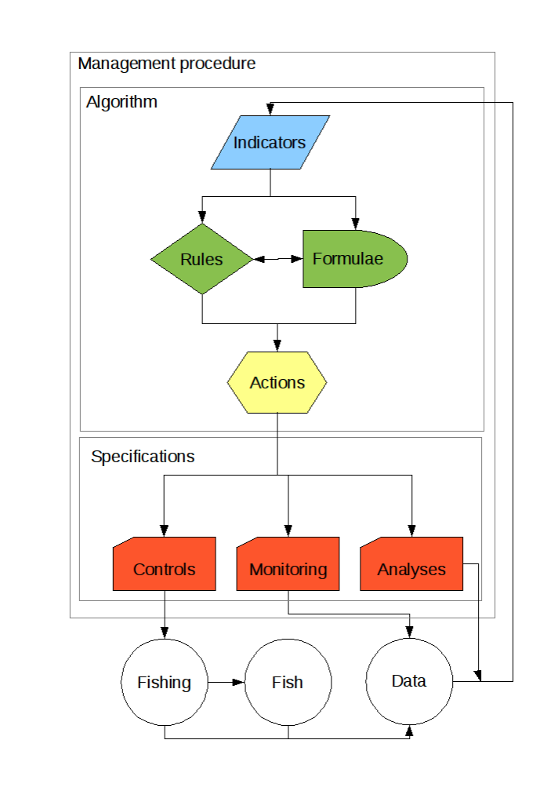
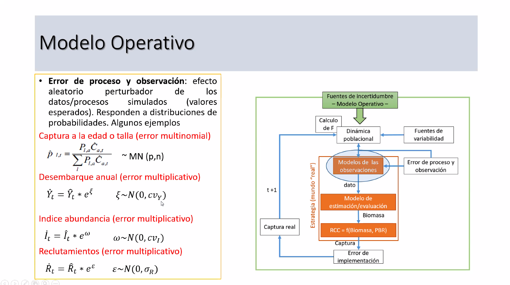

Prof. Cristian Canales
El presente documento contiene el syllabus, así como también notas y material bibliográfico del Contenidos del Curso-Taller “Tópicos de Evaluación de Estrategias de Manejo (EEM)”, impartido por el Dr. Cristian Canales a investigadores del Instituto de Fomento Pesquero y Sectorialistas de la SubSecretaria de Pesca.
El objetivo del curso es otorgar una amplia mirada a la herramienta de evaluación de estrategias de manejo EEM o MSE por sus siglas en inglés) de pesquerías chilenas a través de aspectos conceptuales, teóricos y prácticos.
El curso tendrá una druación de 8 horas lectivas distribuidas en 4 clases de 2 horas cada una.

links de trabajo de simulación provisto en clases y perteneciente a Juan Valero MSE game
Esta herramienta permite a los usuarios explorar el desempeño de opciones de reglas de control de explotación para la ordenación de especies de túnidos. Ha sido desarrollada como herramienta educativa para resaltar aspectos de la aproximación de evaluación de estrategias de explotación (EEO).
El paquete incluye tres componentes principales:
Existe otro elemento didactico creado por Blue Matters Science, y que también es un shiny para identficar los PBR basado en distintas reglas de control, como se describe a continuación;
The Reference Point Calculator (RPC) is an interactive online app for exploring and deriving limit and target reference points for Canadian fisheries. Use of the RPC falls into two general categories. First, RPC is intended to visualize the stock dynamics, including those arising from environmental conditions experienced by the stock, needed to meet the Fish Stocks Provisions of the Fisheries Act, specifically the establishment of limit reference points (LRPs). Second, management strategies can then be evaluated against performance measures related to the LRP and other outcomes of interest using closed-loop simulation. (Huynh et al., 2023)
Este ejercico tiene las bases conceptuales de T. R. Carruthers et al. (2014), T. Carruthers & Hordyk (2016) y T. Carruthers (2017)
el shiny se encuentra en el siguiente link;
RPC Reference Point Calculator 0.4.1.
Y el detalle, descripción y guia de usuario es provista en la siuiguiente pagina;
En terminos conceptuales es necesario también identificar las diferencias entre un MSE y un Proedimiento de Manejo;
Bentley & Stokesbury (2010) definen un PM como:
Management procedures can take numerous and varied forms. This section begins with a description of the necessary characteristics that all management procedures must have. Next, we describe what role management procedures play inside a complete fisheries management policy. Finally, we discuss in more detail the component parts of a management procedure and how these parts can be put together in different ways to suit the particular management objectives for, and. characteristics of, a fishery. We provide some simple examples of management procedures.
Y suscompoentes pueden ser identificados en la siguiente figura;

Se explica como se configura un MO y a su vez se explican los distintos errores que se establecen en un modelo de evaluación:
En relación con este objetivo, se detallan las fuentes de incertidumbre relevantes asociadas a errores de observación, de modelo, de proceso, de estimación y de implementación en relación con estas pesquerías, las que pueden variar dependiendo del contexto específico. A continuación, se presentan detalles asociados a algunas fuentes de incertidumbre comunes asociadas a los análisis y pesquerías objetivo:
Errores de medición o muestreo en la recopilación de datos de la pesquería. También la posibilidad de tener sesgos o errores sistemáticos en los métodos de observación de los datos. Capturas y esfuerzo en el caso de brótula y cojinoba moteada y estructuras de tallas en el caso de cojinoba del sur.
Se refiere a simplificaciones o suposiciones excesivas en la formulación del modelo ya sea de producción de excedentes o global o uno basado en tallas. Sin embargo, acá se asumen ciertos supuestos por las limitaciones de los datos recopilados (error de observación). Se puede incurrir en este error por falta de inclusión de factores relevantes en los modelo estadísticos e incluso conceptuales (Saltelli et al., 2008).
Este tipo de error es uno de los más complejo de asumir y evaluar, dado que son errores inherentes a la variabilidad natural en los procesos biológicos o ambientales (Hilborn & Walters, 1992). Generalmente se asocia a cambios imprevistos en las condiciones o factores que afectan a las pesquerías y sus dinámicas. También se puede considerar que este error se magnifica cuando no hay una completa comprensión de los mecanismos subyacentes que rigen el proceso obre el cual los peces se desarrollan (Jorgensen & Fath, 2011).
Ese se consigna como un error de muestreo al inferir características de una población a partir de una muestra que puede no ser representativa de los patrones buscados, y sea por una falta de representatividad o sesgos en la selección de la muestra en los programas de monitoreo pesquero Métodos de estimación inadecuados o inexactos utilizados.
Este error se refiere a las desviaciones entre la implementación planificada y la implementación real. En específico, es cuando la cuota extraída o la recomendación de manejo pesquero no tiene consistencia con la realidad de la pesquería y su fiscalización o seguimiento (Reed, 2008). En este caso no es posible evaluar este error, dado que no existen plan de manejo para ninguna de las tres especies que haga operativa las recomendaciones propuestas.
Ejemplo de error de proceso y observación:

Algunas distribuciones de probabilidad y aleatorización (R-studio). Simulación
Identificación de fuentes de incertidumbre
Implementación de un MO (R-studio). Modelamiento de procesos biológicos, pesqueros y decisionales (RCC)
Condicionamiento e identificación de MO alternativos.